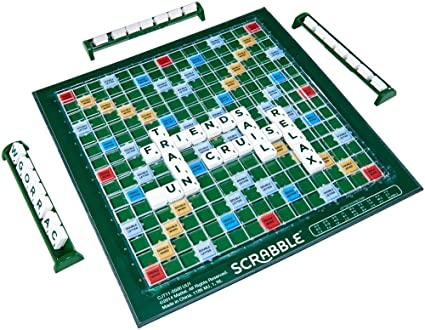

Cal fer un programa en Java que faça una variant del joc de l'Scrabble, on només participarà 1 jugador. En nom del fitxer serà scrabbleCognomNom.java
Note
Només és obligatori el primer punt (construir el tauler i mostrar-lo). No obstant, és una bona pràctica de cara l'examen que intenteu fer-ho tot. Si alguna part no saps com fer-la, consulta l professor en compte de ChatGPT.
1. Construir el tauler i mostrar-lo
1.1. Demanar dimensions del tauler
Per a fer el tauler, primer caldrà demanar per teclat quantes files i quantes columnes tindrà el tauler (recorda que habitualment el tauler és quadrat però ací pot ser que siga rectangular.
Cal controlar que files i columnes siguen imparells.
1.2. Calen 2 matrius per al joc
Per al tauler caldrà definir 2 matrius (de caràcters) paral·leles, ja que en cada casella voldrem poder guardar 2 coses: - el tipus de casella que és (de doble tant de paraula, triple, etc) - quina lletra té la fitxa que hem posat allí. Per tant
Com que son dos conceptes distints en una mateixa casella, crearem 2 matrius
Matriu de Punts
Per a guarda quants punts val cada casella. Bé, més que "punts, guardarà el tipus de casella que és. Aquesta caseella pot tenir els següeents valors:
- 'l' → doble tant de lletra
- 'L' → triple tant de lletra
- 'p' → doble tant de paraula
- 'P' → triple tant de paraula
- ' ' → casella normal (sense cap bonus)
De moment crea la matriu iniciant-la sols al caracter blanc. Més endavant ja l'omplirem.
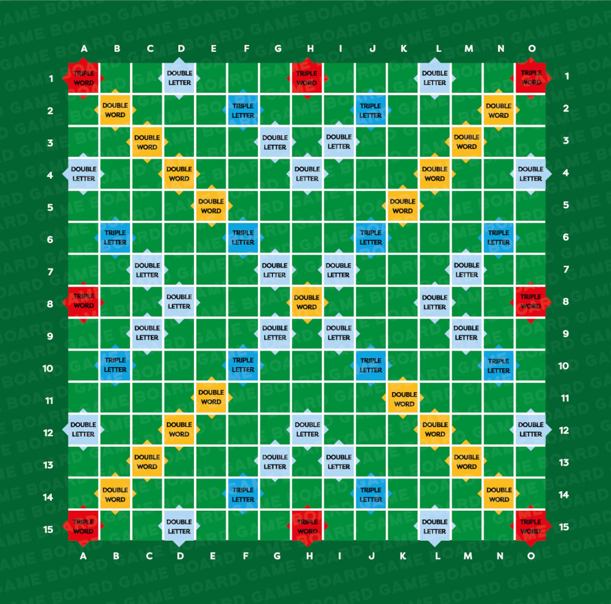
Matriu de Fitxers
Per a guardar quina lletra (fitxa) hi ha en cada casella. Realment, esta matriu només s'utilitzarà a partir del punt 3 de l'exercici.
De moment crea la matriu iniciant-la sols al caracter blanc. Més endavant ja l'omplirem.
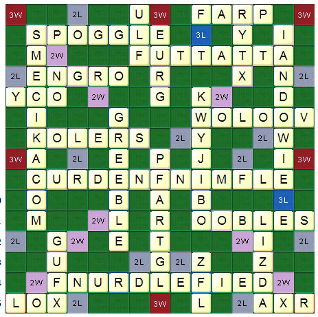
Les coordenades de les files i de les columnes seran números que començaran per 1 (i acabaran en la quantitat de files i columnes que s'havien indicat per teclat).
1.3. Posar els colors de les caselles de la matriu mPunts
En compte de colors, posarem un caràcter en cada casella per a indicar de quin tipus és cadascuna (, l, L, p, P). Anem a vore com posar-les.
1.3.1. Inicialitza cada casella del tauler amb un espai en blanc.
Hauas de fer el recorregut assignant els valors
1.3.2. Posar les pfent una X gegant al tauler des del centre.
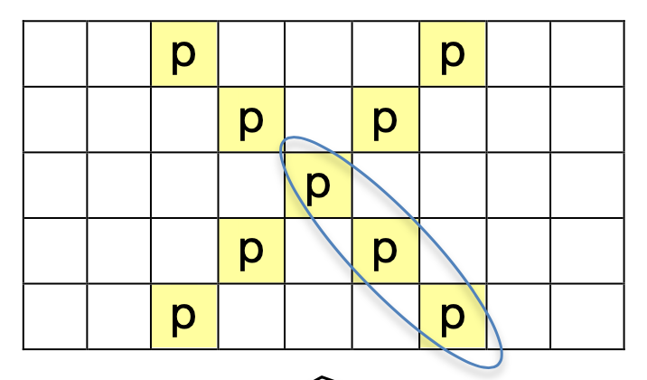
Consells
- Busca la posició del centre (fila i columna).
- Tria de quina d'estes formes vols fer-ho:
- Opció a) Fer les aspes de la
Xuna a una:- Fer un bucle per a l'aspa dreta-baix (mirar imatge anterior). En cada passada del bucle anirà canviant la fila i columna i es marcarà la posició corresponent, fins que entropesse en una vora (de baix o de la dreta, segons el tauler).
- Fes el mateix per a les altres 3 aspes. Un bucle per a cada aspa, clar:
- dreta_baix
- esquerra_baix
- dreta_amunt
- esquerra_amunt
- Fer les aspes de la
Xtotes alhora: Amb un sol bucle, posa 4pen cada passada, des del centre cap a les vores.
1.3.3. Posar les P: als 4 cantons i a la meitat dels 4 costats.
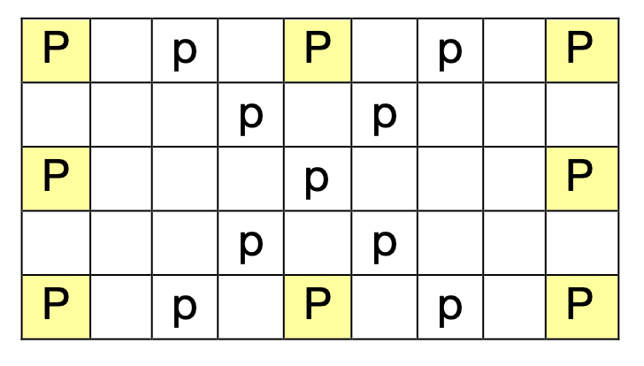
Vigila!!!
- No passa res si alguna
Psobreescriu alguna lletra posada abans. - "No ho faces amb bucles."
- Fes una instrucció per a cada
P. (pensa que sols hi han 6 )
1.3.4. Posar 5 l i les seues simètriques
És a dir fer 5 voltes estos passos:
- Triar posició aleatòria. Per a buscar un número aleatori entre 1 i N:
| Java | |
|---|---|
Si la posició ja estava ocupada per una lletra, caldrà buscar altra posició traient altre numero aleaotori fins que es trobe una buida. 2. Es posarà eixe color (lletra
l) en eixa posició triada.
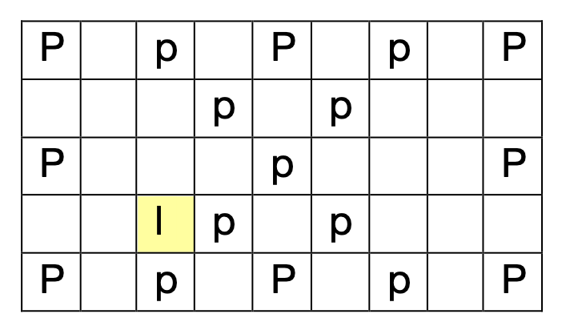
- També es posarà eixe color en les parts simètriques del tauler, tant en horitzontal com en vertical.
- Caldrà calcular les coordenades d'eixes altres 3 caselles i posar allí també la
l.
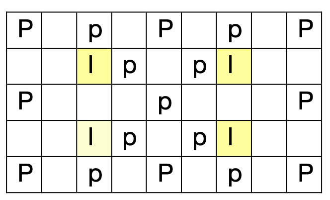
1.3.5. Posar les L. Se'n posarà una cada 4 files i cada 4 columnes
Les L han de quedar en posicions concèntriques, com en l'exemple. Això vol dir que les 4 L més
interiors estàn a la maateixa distància del centre, les 4 següents més exteriors estan a una distància major, i així successivament.
Per a este exemple de les L hem suposat un tauler més gran.
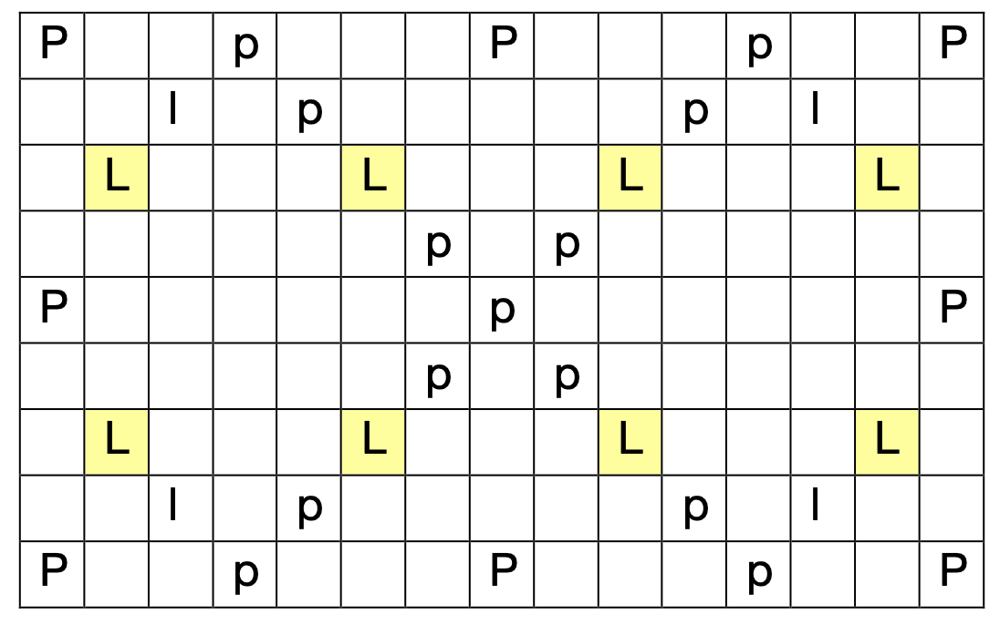
1.4. Es mostrarà el tauler de punts.
Mostrarem per pantalla el tauler generat, indicant els índexs de files i columnes. Sols cal mostrar la matriu mPunts, ja que la matriu mFitxes està buida en este moment.
Mostrarem sols l'últim dígit dels índexs de files i columnes per a que quede quadrat
Exemples:
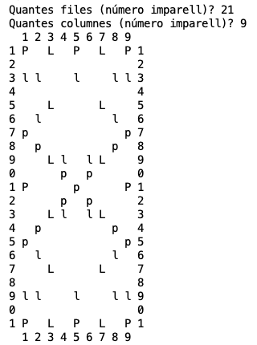
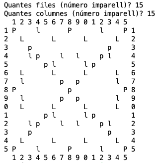
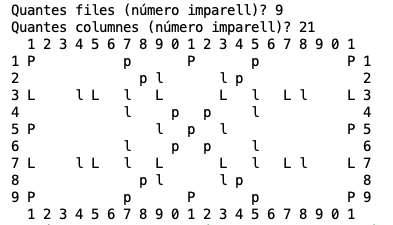
Cal guardar les proporcions. Per exemple, si el tauler té la mateixa quantitat de files que de columnes, no ha de semblar un rectangle.
2. Puntuacions de lletres i quantitat de fitxes de cada [OPCIONAL]
Les fitxes que disposem, que haurem de guardar, son les següents. Conta quee cada fitxa (lletra) té un valor en punts i que hi ha una quantitat limitada de fitxes de cada lletra:
| Puntuació | Lletra | Quantitat |
|---|---|---|
| 0 punts | blanc | 2 |
| 1 punt | E | 13 |
| A | 12 | |
| I | 8 | |
| R | 8 | |
| S | 8 | |
| N | 6 | |
| O | 5 | |
| T | 5 | |
| L | 4 | |
| U | 4 | |
| 2 punts | C | 3 |
| D | 3 | |
| M | 3 | |
| 3 punts | B | 2 |
| G | 2 | |
| P | 2 | |
| 4 punts | F | 1 |
| V | 1 | |
| Y | 1 | |
| 5 punts | K | 1 |
| 8 punts | H | 1 |
| J | 1 | |
| Q | 1 | |
| Z | 1 | |
| 10 punts | Ç | 2 |
| X | 2 |
Per a guardar això, caldrà definir 2 HashMap, amb estos noms:
2.1. qpunts, amb quants punts té cada lletra.
Caldrà afegir al HashMap qpunts les parelles corresponents de lletra - quantitat de punts.
| Lletra | Punts |
|---|---|
| E | 1 |
| A | 1 |
| I | 1 |
| ... | ... |
| X | 10 |
3. qfitxes, amb quantes fitxes hi ha de cada lletra.
Caldrà afegir al HashMap qfitxes les parelles corresponents de lletra - quantitat de fitxes.
| Lletra | Quantitat |
|---|---|
| E | 13 |
| A | 12 |
| I | 8 |
| ... | ... |
| X | 2 |
4. Jugar
Ara ja podem començar a jugar. El joc consistirà en un bucle que es repetirà fins que el jugador no puga posar cap paraula més.
4.1. Bucle amb les següents parts:
- Mostrar el tauler de fitxes
- El jugador agafa fitxes noves
- El jugador posa una paraula (si no es pot posar, acaba la partida)
- Mostrar puntuació
Ara es detallarà què ha de fer cadascuna de les accions d\'este bucle.
4.1.1. Mostrar el tauler de fitxes
Recorda que el tauler el tenim representat en 2 matrius: la matriu on estan els punts (mPunts) i la matriu on estan les fitxes (mFitxes).
La matriu de punts l'hem mostrada al principi del programa. Ara, dins del bucle caldrà mostrar la matriu de fitxes (es mostrarà per a cada paraula que pose el jugador).
Exemples
A l'inici de la partida
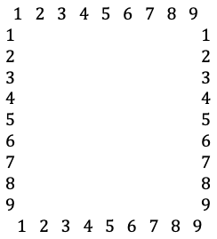
Durant la partidoa
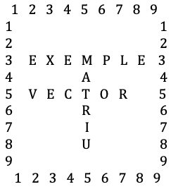
4.1.2. El jugador agafa fitxes noves
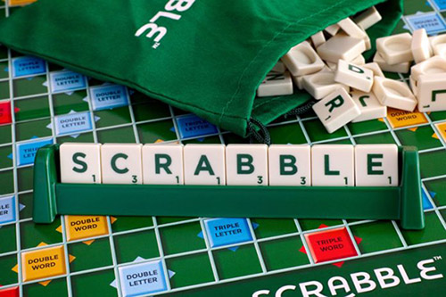
Caldrà guardar en una estructura de dades les fitxes que té el jugador en cada moment.
Quina estructura de dades seria la millor?
-
Vector de 7 components? L'inconvenient és que per afegir lletres al vector haurem de buscar posicions buides.
-
HashSet Esta estructura de conjunt seria apropiada ja que no importa l'ordre en el qual tenim les nostres fitxes, però no ens serveix ja que en un conjunt no es poden repetir els elements (i podríem tindre diverses lletres B, per exemple).
-
HashMap Podríem tindre un diccionari lletra-quantitat, però per a afegir o llevar alguna lletra caldria vore primer si està, vore la quantitat i, després, modificar eixa quantitat.
-
ArrayList Esta serà la millor opció ja que, encara que les lletres estan ordenades, podem llevar o posar lletres en qualsevol lloc, i no hem de fer cap altra operació.
4.1.2.1. La ma de lletres
Per tant, fora del bucle declararem un ArrayList de caràcters, anomenat meues, ja que guardarà les meues fitxes.
4.1.2.2. Assignació
Automàticament s'assignaran al jugador les fitxes que li falten fins arribar a 7. Per exemple, si en un moment determinat el jugador té 3 fitxes, se li n'assignaran 4 (no es pregunta res per teclat).
Per cada fitxa que haja de ser assignada:
- Obtenim una lletra aleatòria.
Per a això tindrem en un String totes les lletres disponibles. Triarem un número aleatori entre eixes posicions i agafarem la lletra corresponent:
| Java | |
|---|---|
- Assignem la fitxa al jugador:
2.1 Si queden fitxes d'eixa lletra:
- L'afegim a l'ArrayList meues.
- Descomptem en 1 la quantitat de fitxes que queden d'eixa lletra.
2.2 Si no, tornem a agafar altra lletra aleatòria.
2.3 Es mostren les 7 fitxes del jugador.
Per exemple: Les meues lletres: A B D O G A R
4.1.3. El jugador posa una paraula
Es demana per teclat:
- La paraula que es vol posar.
- La posició inicial de la paraula en el tauler (fila, columna).
- La direcció: (d)reta / (b)aix / (a)munt
S'imagina que la paraula que vol posar el jugador existeix al diccionari.
- Es posa la paraula al tauler. Si no és possible, acaba la partida.
Problema
I si no volguérem acabar la partida si no cap la paraula? Caldria desfer les lletres posades de la paraula que estàvem posant i tornar a posar-les a la llista "meues".
Solució
-
Abans d'intentar posar la paraula, fer una còpia de seguretat (en altres variables, amb altra zona de memòria) del tauler de fitxes (
tfixes) i de les fitxes nostres (meues). -
Si veiem que no cap la paraula, tornarem a deixar-ho com estava (fent que les variables originals apunten a les de la còpia de seguretat).
Mostrar puntuació
-
Es mostraran els punts de la jugada que s'acaba de fer i els punts acumulats de totes les jugades fins a eixe moment. Per exemple:
-
Punts de la jugada: 20
- Punts acumulats: 87
Opcionalment també es podrien detallar els punts de la jugada indicant quants dobles tants de paraula hi havia, etc.
I, si hem fet la millora de puntuar també les altres paraules que formem amb la jugada, també es podrien mostrar eixes paraules i la puntuació obtinguda per cadascuna d'elles.